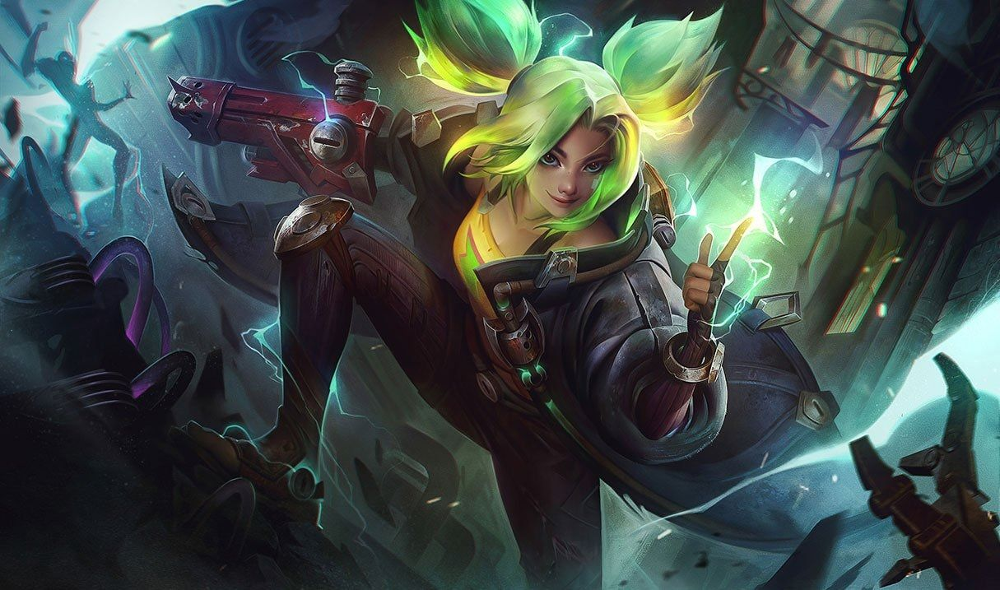

제리
제리
제리, 자운의 불꽃
Zeri, The Spark of Zaun

1. 배경
2. 스킬
2.1. 패시브 - 살아 있는 배터리(Living Battery)
제리가 보호막을 받을 때마다 2초간 이동 속도가 10% 증가합니다.
2.2. Q - 집중 사격(Burst Fire)
기본 지속 효과로 입히는 피해가 적중 시 효과 대신 스킬 관련 효과를 적용하며, 치명타가 적용되지 않습니다.
사용 시: 이 스킬은 기본 공격으로 간주됩니다. 제리가 단숨에 7발을 발사해 처음 적중하는 적에게 각각 물리 피해를 입힙니다.
이 스킬을 사용해 입히는 피해에는 치명타가 적용될 수 있고, 대상당 한 번 적중 시 효과를 적용합니다. 기본 공격 할 수 있는 대상이라면 무엇이든 맞힐 수 있습니다. 재사용 대기시간과 시전 시간이 공격 속도(최대 초당 공격 횟수 1.5회)에 따라 감소합니다. 공격 속도 초과분의 70%가 공격력으로 전환됩니다.
2.3. W - 초강력 레이저(Ultrashock Laser)
파동이 지형에 맞으면 광선으로 확산되어 범위 내 모든 적에게 같은 효과를 적용합니다.
이 스킬의 시전 시간은 공격 속도에 따라 감소합니다.[13]
벽을 관통한 초강력 레이저는 챔피언 및 몬스터에게 치명타로 적중합니다.
2.4. E - 스파크 돌진(Spark Surge)
기본 공격 또는 스킬로 챔피언을 맞히면 이 스킬의 재사용 대기시간이 0.5초 감소합니다. 집중 사격 치명타 적중 시 재사용 대기시간이 1.5초 감소합니다.
첫 적을 꿰뚫은 후에도 치명타가 적용될 수 있지만, 적중 시 효과는 적용하지 않습니다. 충전되지 않은 기본 공격은 이 스킬의 재사용 대기시간을 감소시키지 않습니다.
2.4. R - 번개 방출(Lightning Crash)
이 동안 집중 사격이 더욱 빠른 3연발 사격으로 바뀌어 대상 주변 적에게 추가 물리 피해를 연쇄적으로 입힙니다.
공격 속도 증가 효과는 제리의 최대 공격 속도도 증가시킵니다. 연쇄 번개의 물리 피해에는 치명타가 적용될 수 있습니다. 충전되지 않은 기본 공격은 과충전 중첩을 쌓거나 지속 시간을 회복시키지 않습니다.
3. 장점
집중 사격(Q)의 강력한 성능 및 뛰어난 잠재력
원거리 딜러 최상급의 기동력
하이브리드 딜링 능력
상기한 장점이 합쳐져 나오는 최상급 딜링 포텐셜
4. 단점
부실한 기본 능력치
복잡한 스킬 매커니즘과 그에 따르는 높은 난이도
높은 번개 방출(R) 의존도
높은 아이템 의존도
느린 라인 클리어
상기 단점들로 인한 라인전에서의 약세
퓨어 탱커를 상대하기 힘듦

저작물은 CC BY-NC-SA 2.0 KR에 따라 이용할 수 있습니다. (단, 라이선스가 명시된 일부 문서 및 삽화 제외)